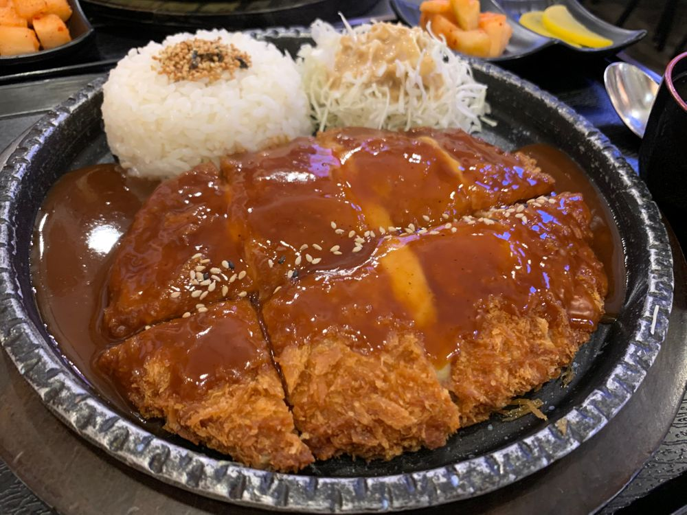

今日は〜？？
ひいだよ🍓

ひいめーるでもかなり紹介してきた
「고구마치즈 돈까스（コグマチーズトンカス）」です！！
コグマ→さつまいも だよ〜🍠
あと韓国では「つ」の発音がないので
トンカツはトンカ「ス」なんだよ〜☝🏻
プチ情報💡笑
韓国のトンカスは
日本のと比べると厚さは薄め！！
なぜかというと作るときに
お肉を叩いて薄くしてるから😳
コグマチーズトンカスは
いろんなタイプのがあるけど
ひいが好きなのは
トンカスの中にコグマムースとチーズが
入ってるタイプ！！
トンカスの上に
コグマムースが乗ってるのもあるけどね🙃
最初に食べたとき美味しさのあまりに
めっちゃ感動したなあ。。
お母さん韓国来たときに
ぜひ食べてもらいたくて
連れて行っちゃったくらい🏃♀️
お母さんもすごく感動してた🥺
「韓国にきたのに日本食…」って
思うかもしれないけど
これは日本にないメニューだし
食べて損は絶対しないから
ぜひ食べてみてください🥺🥺
ではまたっ
한국어로만 쓰는 내용인데...
요즘 꾸라언니가 실제로도 “히” 라고 불러줘!!!
그게 너무 좋더라...☺️헤헷
뭔가 더 친해진 느낌...??
그냥 내가 멋대로 느끼고 있는 뿐이지만ㅎㅎㅎ
오늘은 어떤 하루였어??
난 기분이 좋았어😆
슬슬 졸리다...
오늘은 빨리 자야겠다🥱💤
그리고 나 요즘 맛있는 거 많이 먹고있오!!!
많이 먹어야 힘이 나잖아 그치 :)
그러니까 걱정 마요😊
내일 뭐 먹을까 생각해서 자야지🤤
あえてのブレブレ🤪
おやすみ😴⭐
ひいまる🥟